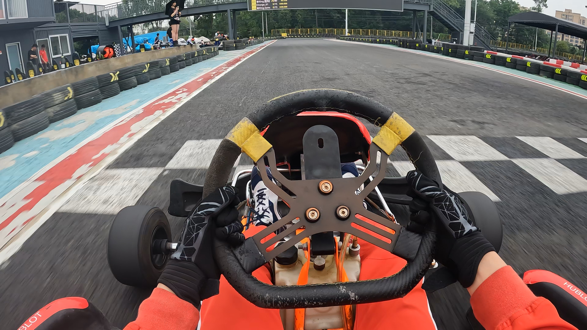
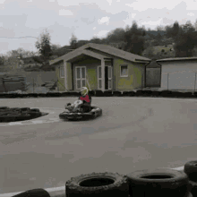
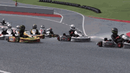
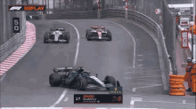

🏎️ What is Karting? The Origins & Thrill of Go-Kart Racing
📜 The Origins of Go-Kart Racing
In 1956, an innovative American engineer named Art Ingels built the very first go-kart in California. Ingels, who worked for a racing car company, used scrap metal and a lawnmower engine to create a small but incredibly nimble four-wheeled machine. At first, it was nothing more than a backyard toy, but as soon as people saw it in action, it sparked a revolution.
Within a few years, go-kart racing spread like wildfire across the United States and Europe, evolving from a simple hobby into a competitive motorsport. Today, karting is not only an exciting pastime but also the foundation of professional racing.
🏁 Why is Karting So Exciting?
✅ Lightweight and Fast – With a weight of only 70-150 kg, karts accelerate quickly and feel incredibly responsive.
✅ Low Center of Gravity – Unlike traditional cars, a go-kart's low-slung design keeps it planted on the track, making cornering a thrilling challenge.
✅ Direct Steering & Instant Feedback – There are no suspension systems, so drivers feel every inch of the road, requiring precise control.
✅ Affordable Racing – Unlike Formula 1, where cars cost millions, karting provides an accessible way to experience true motorsport action.
Many racing drivers say, "If you can master a go-kart, you can drive anything."
🚀 From Go-Karts to Formula 1: The Path to Greatness
Some of the greatest F1 champions started their journey in karting:
🏆 Lewis Hamilton – The 7-time F1 champion got his first kart at age 6 and was beating older kids in races by age 8.
🏆 Max Verstappen – Started karting at just 4 years old and was winning international championships before becoming the youngest F1 driver ever.
🏆 Michael Schumacher – The legendary 7-time champion honed his precision and technique on karting circuits in Germany.
Karting teaches racecraft, braking techniques, overtaking skills, and vehicle control, all of which are essential for success in Formula 1, Le Mans, or even GT racing.
💡 Fun Fact: Ayrton Senna, one of the most legendary F1 drivers, once said: "Karting was the purest racing experience I ever had. No politics, just pure driving."
🕹️ Interactive Fun!
🎬 Watch: "How Go-Karts Evolved Into a Global Motorsport" (Short Video)
🧩 Quiz: "Could You Be the Next Karting Champion?"
📍 Explore: "360° Virtual Tour of a Professional Karting Track"
Objective: Help beginners master essential driving techniques and avoid common mistakes.
1️⃣ Proper Driving Position & Posture
Having the right posture ensures better control, balance, and reaction time.
✅ Correct Posture:
Sit deep into the seat with your back fully against the seatback.
Grip the steering wheel firmly with both hands at the "10 and 2" position (as if on a clock).
Keep arms slightly bent, allowing flexibility for steering control.
Feet placement:
Right foot → Accelerator (Throttle)
Left foot → Brake (Avoid using both feet simultaneously!)
Head position: Look far ahead, not just at the kart in front of you.
🎬 Tip: Watch onboard videos of professional karting races to observe their posture!

2️⃣ Acceleration & Braking Techniques
Proper throttle and brake control is key to smooth and fast driving.
✅ How to Accelerate Efficiently:
Gradually apply the throttle when exiting corners; never floor it suddenly.
Avoid wheelspin! Sudden acceleration can cause the rear wheels to lose grip.
Use full throttle only on straights, but ensure you have control before doing so.
✅ Braking Tips for Maximum Control:
NEVER brake and accelerate at the same time (braking while pressing the gas causes instability).
Brake before entering a turn, not in the middle of it.
Use progressive braking: Apply the brake smoothly and release it gradually.
Avoid locking the wheels by braking too hard—locked wheels cause skidding!
🎬 Game Idea: "Test Your Braking Reflexes!" (A mini-game where players must react quickly to sudden stop signals)
Turn smoothly and progressively; avoid jerky movements.
Follow the racing line:
Wide entry → Tight apex (inside of the curve) → Wide exit
Accelerate only after passing the corner apex to maintain stability.
❌ Common Mistakes to Avoid:
Turning too early → You might run wide and lose speed.
Applying throttle too early → Causes the rear to slide out.
Braking in the middle of the turn → Reduces grip and control.
🎬 GIF Comparison: "Correct vs. Wrong Cornering Techniques"

Correct

Wrong
4️⃣ How to Avoid Spin-Outs (Losing Control)
Losing control and spinning out (also known as oversteering) is a common mistake for beginners.
✅ How to Prevent Spin-Outs:
Avoid braking too late into a corner—this causes the rear to slide.
Do not steer too aggressively—smooth steering keeps balance.
If you feel the rear sliding, counter-steer gently (turn in the direction of the slide).
Keep calm—don't overcorrect, as this can make the spin worse.
🎬 Pro Tip: Watch how F1 and karting pros recover from skids in wet conditions!

5️⃣ How to Overtake Safely & Effectively
Karting is all about close racing—knowing how to overtake is crucial.
✅ Smart Overtaking Strategies:
Plan ahead—identify weak spots in the driver ahead (e.g., slow exit from corners).
Use the slipstream—follow closely on a straight, then slingshot past.
Late braking technique—brake slightly later than your opponent but without losing control.
Side-by-side approach—get beside the other kart before the turn to claim the racing line.
Defend wisely—block only once to avoid penalties and keep racing fair.
❌ What NOT to Do:
Dive-bombing (late braking too aggressively, forcing others off-track).
Contact racing (hitting others to gain position—this can lead to penalties).
Blocking multiple times (only one move is allowed in competitive racing).
🎬 Video Idea: "Best Overtakes in Karting History!"
🎮 Interactive Features & Games
✅ GIF Comparisons – Show proper vs. incorrect techniques.
✅ Reaction Speed Game – Test how fast you can respond to braking signals.
✅ Overtaking Quiz – "When is the best time to overtake?" (Players choose different scenarios).
🏁 Conclusion
Mastering these basic karting techniques will make any beginner faster, smoother, and safer on track. Want to take your karting skills to the next level? Try advanced techniques like trail braking, weight shifting, and wet track racing!
💬 What's next? Ready to practice your skills on a real track? 🏎️💨
Types of Karting – An Exciting Guide to Different Kart Racing Styles 🏎️🔥
Karting is an exhilarating motorsport that serves as the foundation for many professional racing careers. Whether you're a beginner looking for a casual thrill or an aspiring racer seeking a competitive edge, there's a karting style suited for you. Let's dive into the various types of karting and explore exciting interactive projects to make your learning experience more fun! 🚀
🏁 1. Indoor Karting – The Perfect Entry-Level Experience
Overview: Indoor karting is ideal for beginners and casual racers. These facilities feature electric or gas-powered karts on controlled tracks, ensuring a safe and fun experience. The smooth track surfaces, sharp turns, and controlled environments make it a great place to practice racing techniques without worrying about weather conditions.
✔ Short tracks with tight corners 🏎️
✔ Electric or gas-powered rental karts 🔋
✔ Ideal for group racing and corporate events 🏆
🎮 Interactive Project: Reaction Time Test
💡 Challenge yourself with a reaction time test, just like a real karting race! Click the button below as soon as the "GO!" signal appears and see how fast your reflexes are.
🌍 2. Outdoor Karting – The Real Racing Feel
Overview: Outdoor karting takes the excitement to another level with longer and more technical tracks. These tracks simulate real racing environments with elevation changes, variable weather conditions, and high-speed straights.
✔ Longer tracks with natural elements (hills, bumps) 🏔️
✔ Weather-dependent conditions ☀️🌧️
✔ Speeds reaching 70+ mph (112+ km/h) 🚀
🎯 Interactive Project: Weather Strategy Challenge
💡 In outdoor karting, drivers must adapt to weather conditions. Try this challenge—match the best karting strategy to different weather conditions!
🛞 Example Question:
It starts raining during your outdoor karting session. What should you do?
A) Keep the same speed and ignore the rain
B) Use smoother steering and braking ✅
C) Speed up on wet patches for extra grip
🔥 3. Sprint Karting – High-Speed Competitive Racing
Overview: Sprint karting is the most common form of competitive kart racing. It features short, high-intensity races on closed-circuit tracks, with classes based on engine power and age categories. Many famous F1 drivers, including Lewis Hamilton and Max Verstappen, started their careers in sprint karting.
✔ Short races (typically 8-15 laps) 🏎️
✔ Karts with 2-stroke or 4-stroke engines ⚙️
✔ Requires precise cornering and overtaking skills 🎯
🏎️ Interactive Project: Racing Line Optimization
💡 Learn how to take corners like a pro! Drag and drop different racing lines on a sample track to see which one results in the fastest lap time.
🌪️ 4. Endurance Karting – The Ultimate Test of Stamina
Overview: Endurance karting focuses on long-distance races that test both speed and strategy. Races can last anywhere from 30 minutes to 24 hours, requiring driver swaps, fuel management, and consistent lap times.
✔ Races lasting from 30 minutes to 24 hours ⏳
✔ Requires teamwork and pit stops 👥
✔ Fuel efficiency and consistency are key ⛽
⏳ Interactive Project: Pit Stop Challenge
💡 In endurance racing, efficient pit stops are crucial. Can you swap tires and refuel the kart in record time? Click as fast as possible to complete your pit stop challenge!
🛞 5. Dirt Karting – Off-Road Thrills
Overview: Dirt karting takes racing off the asphalt and onto loose surfaces like dirt and gravel. These karts feature special tires and suspension setups to handle the rough terrain.
✔ Tracks made of dirt, clay, or gravel 🏜️
✔ High-speed drifting and sliding 🔄
✔ Requires precise throttle control 🎛️
🎢 Interactive Project: Drifting Simulator
💡 Test your drifting skills on a virtual dirt karting track! Try to balance throttle control and steering to keep your kart on the racing line.
🔝 6. Superkarting – The Fastest Karts in the World
Overview: Superkarts are the Formula 1 of karting, reaching speeds of up to 150 mph (240 km/h)! These high-performance machines are designed for long circuits and feature aerodynamic bodywork for enhanced downforce.
✔ 2-stroke engines up to 250cc 💨
✔ Capable of speeds over 150 mph (240 km/h) 🚀
✔ Used on large circuits like Silverstone and Monza 🏁
🏎️ Interactive Project: Speed Comparison
💡 How fast are superkarts compared to other vehicles? Drag and compare different vehicles (bicycles, normal karts, F1 cars) on a speed graph.
🏆 Bonus: Fun Karting Facts!
📌 The fastest kart ever recorded hit 161 mph (259 km/h)!
📌 F1 legend Ayrton Senna started his career in karting and called it "pure racing"!
📌 The famous Mario Kart game series has sold over 160 million copies worldwide!
🚗 Ready to Test Your Karting Knowledge?
💡 Now that you've learned about different karting types, why not test your skills? Take our Ultimate Karting Quiz and see if you have what it takes to be a karting champion!
Conclusion: Karting is an incredible motorsport with diverse styles to explore, from indoor tracks to high-speed superkarting. Whether you're a beginner or an adrenaline junkie, there's a karting type perfect for you! Ready to hit the track? 🏁🔥